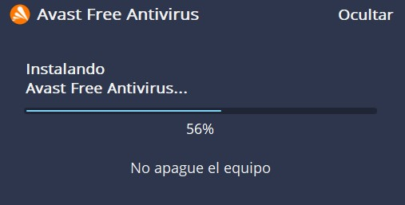
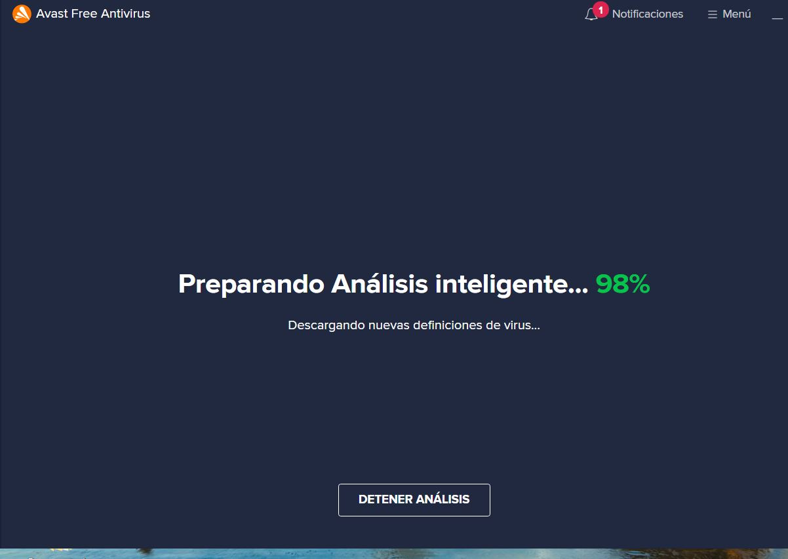
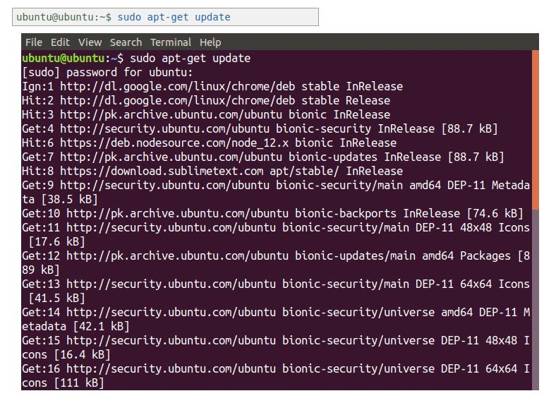
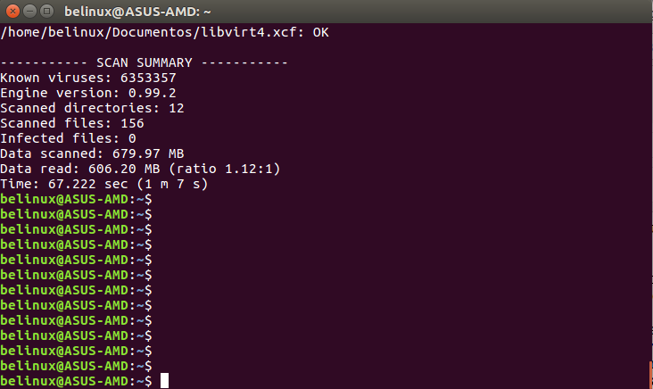

Avast es uno de los antivirus por excelencia en Windows, ya que en cualquier página te lo recomiendan por su funionalidad y su velocidad. Para descargarlo basta con darle a la imagen y se reenvia a la página oficial de Avast.
Para poder instalar este programa basta solo con instalar el ejecutable que nos descargamos y nos saldria exactamente lo que tenemos en la foto.A partir de aquí ya tendriamos instalado el antivirus.
Una vez instalado ya podremos analizar los virus y el malware por si tendriamos alguno.
Para instalar clamav en Ubuntu lo primero que hay que hacer es sudo apt-get install clamav clamav-daemon, con esto instalamos lo que sería el programa.
Tras la instalación, comprobamos que se hayan instalado las actualizaciones y todos los pluggins , por eso tenemos que hacer: sudo apt-get update.
Si queremos comprobar si tenemos algun virus , iniciamos el ejecutable de clamav y en la terminal nos mostraria cómo se estaría haciendo el escaner y enseña si tenemos algún virus o no.
Avast es un antivirus de software propietario utilizado por más de 1000 millones de usuarios en todo el mundo. Representando una multigalardonada solución para la protección contra virus, con software anti-spyware(elimina programas espías) y anti-rootkit (elimina formas ocultas de virus) integrado para mayor seguridad. Está disponible de forma gratuita para uso no comercial y doméstico.
Proporciona una protección exhaustiva y le mantiene seguro. En pruebas realizadas supera algunos famosos productos de pago.Este programa se puede descargar en macOS,Windows y Android.
Mientras que Clamav es software libre que es una de las principales diferencias , otra gran diferencia es que para este antivirus se usa la terminal que puede ser tedioso si no se controla los comandos con linux.
Al ser codigo abierto una de las piezas clave de ClamAV es el soporte de desarrolladores que posee en todo el mundo; esta red de desarrolladores global posibilita una rápida reacción ante cualquier evidencia de un nuevo virus.
Clamav se puede descargar en Windows, Linux y otros sistemas operativos semejantes a Unix.Detecta alrededor de 320 000 virus, gusanos y troyanos, incluyendo virus programados como macros de Microsoft Office.
Tanto avast como clamav tienen un escaneo bastante rápido.
•Procesador Intel/AMD x64.
•700 MB de espacio libres en el disco duro.
•Ubuntu Desktop 18.04/20.04 LTS 64-bit.
•GNOME.
•Soporta plataformas de 32/64 bit.
•Soporta la mayoría de formatos de correo electrónico.
•Actualizaciones automáticas de la base de datos de virus.
•Detecta cualquier software malicioso que pueda haber.
• Buscador de virus en demanda.
•Entorno gráfico muy anticuado.
•PC: Windows 10, 8.1, 8 o 7 (SP2) (32 o 64 bits), 1 GB de RAM y 2 GB de espacio libre en el disco duro.
•Mac: macOS 10.10 (Yosemite) o posterior con 500 MB de espacio libre en el disco duro.
•Android: Android 4.1 (Jelly Bean) o posterior.
•iPhone/iPad: iOS 10.0 o posterior.
•Actualizaciones manuales.
•Detecta y bloquea virus, malware, spyware, ransomware y el phishing. Realiza análisis inteligentes para detener las amenazas antes de que le afecten.
•Busca todas las «grietas» que permiten que se cuele el malware: desde configuraciones y contraseñas no seguras hasta complementos sospechosos y software desactualizado.
•Buen entorno gráfico para poder trabajar.